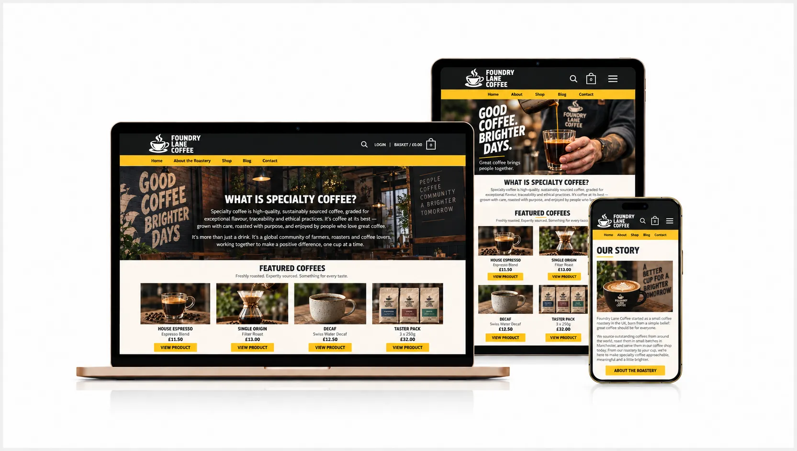
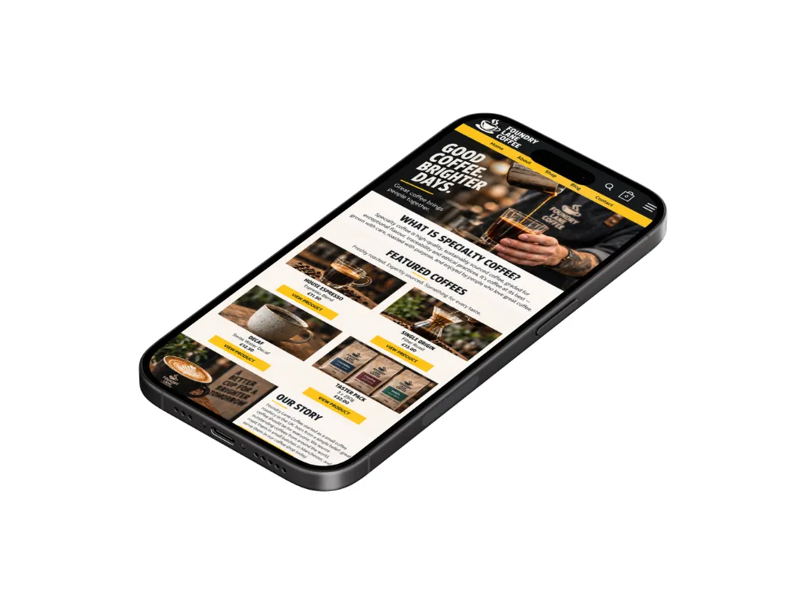
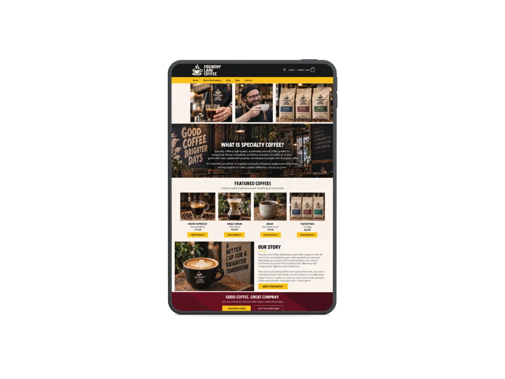
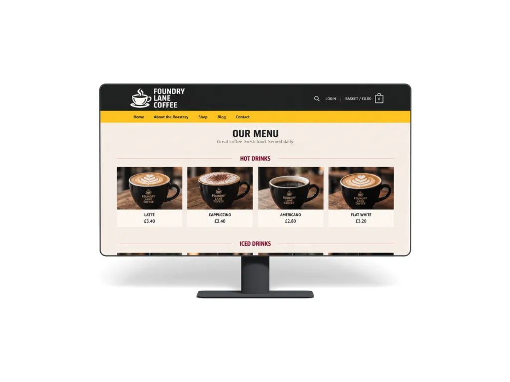

A new website for a local coffee shop
How I helped:

Project overview
- Project type
- New website
- Main goal
- Make key visitor information easier to find
- Content managed
- Menu, opening times and gallery
- Photography
- Original on-site photography
- Turnaround
- 10 working days
A website that feels as considered as the coffee shop itself
The coffee shop had built a strong local reputation, but its online presence did not give people the same impression. Customers often had to rely on social media to check opening times, menus and practical information before visiting.
The new site needed to bring that information together in one place while giving people a better sense of the atmosphere, food and drinks before they arrived.
The brief
Create a small, image-led website that makes the most important visitor information easy to find, gives the business a stronger online presence and allows the team to keep regularly changing content up to date.
Scope


Built around planning a visit
Most people arriving on the site want to answer a few simple questions quickly: when is it open, where is it, what is on the menu and what does the place look like?
I brought opening times, location details and menu information into the main customer journey instead of hiding them deeper in the site. The layout was kept visual, with original photography doing much of the work rather than relying on long sections of copy.
The CMS was set up around the content most likely to change. The team can update opening hours, menu information and selected images without needing to change the rest of the site.
Key improvements

Start a similar project
If your business relies on people visiting in person, I can help make sure your website gives them the information they need before they arrive.
Tell me about your project